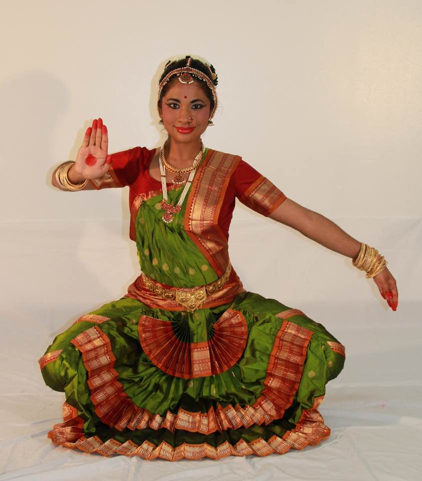
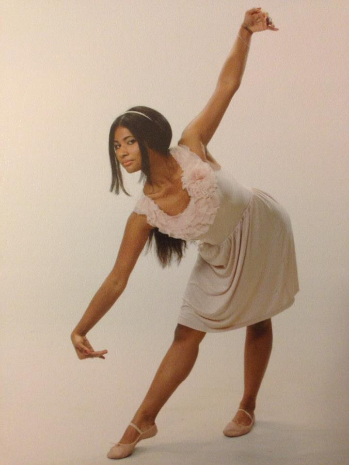

Dancing as Devina
Born to the beat of steel pan on the island of Trinidad and Tobago, it was in my blood to be a dancer. As soon as my family immigrated to the United States, I was enrolled in Classical Indian Dancing. From there, I began to consume dance classes like popcorn and added Ballet, Jazz, Tap, Burlesque, Salsa, Swing, Hip Hop, Breakdance and Musical to my repetoire. Each style of dancing gave me something different. Each style built me. This is the story of dancing as I am. This is the story of Dancing as Devina.
Grit
Bharatnatym is where I started. It is considered Classical Temple Dancing in India. The dances are steeped in the the Hindu culture and performed barefooted to music that is sung in Hindi. Since the dances are lyrical, I struggled more than the other six year olds in my class. Their families were from India and they understood the words they were dancing to. They could match their expressions to the mood of the songs, whereas I was left confused and overwhelmed. The callouses on the heels of my feet grew thicker and so did my grit. Dancing will break you. It will rip you to shreds and expose the weaknesses in your heart, then it will breathe fire into your lungs and raise you anew. I was broken hard.
Each Sunday was a living hell for me as a child. I used to dread going to dance class because it made me hurt- physically and emotionally.
I was different than my peers. I was a brown girl with brown eyes that danced to music that made me feel more
"Your father is sick". "Your father is dying". These words shook my world. I thought that I, too, must be dying. I asked to graduate dance. At sixteen. Only 1/10 dancers have an Arangetram (a two hour long solo performance that certifies you as a Professional Indian Dancer). I was told that I was not at the correct level. I said I would work as hard as it took to get me there. I was determined for my dad to see me graduate. I would be the pride and joy of his life. I was unstoppable.
Every day for one year, I would leave highschool and go to a private dance lesson with my teacher. My mom would record the dances and we would go home. After class was over at 7pm, I would go home and dance to the tapes for two hours. It paid off. I had my Arangetram at sixteen years old in front of 200 guests. I choreographed an entire dance and was adorned in mehendi (henna) and gold jewelry. My family flew up from Trinidad and Canada and friends of my mom and dad drove in from all over the US. The ankle bells were so tight that my thin and twisted feet were bleeding out on the stage, but I smiled the whole way through. You were only allowed three mistakes throughout the entire dance, or you didn't get your certificate. I got mine in front of my father. And I have never felt more alive.
Friendship
While I was pursuing my professional certification as a Classical Indian Dancer, I was enrolled in two other forms of dance through my high school.
My favorite of the two was Tap. I had tap class right after lunch period and right before biology. This was the highlight of my day. Only a few girls
were selected to paticipate in the dance classes as you had to test out of P.E. first. Luckily, I made the cut. My class was a modest size of twelve girls. We were not
part of the same friend groups in high school and I was pretty intimidated by them. A lot of them were
Attitude and Sass
Something about wearing red lipstick and high heels at fifteen changes you. There's no deep emotional history connected to my love of Broadway‑Style dancing. My love for theatrical dance stems from the thrill of the fun. Musical dancing teaches you one thing- attitude- and it teaches it well. I learned to swing my hips and pout my lips. I learned the difference between a sultry eye and a flirtatious wink. I learned how to ask for what I wanted with a look and a kiss. I learned the power of being female and it did away with my shyness for good.
Teamwork
What did I learn from my instructor pushing my seventeen year old body into the splits? What did I learn from being yelled at till I cried? I learned the fine art of teamwork. If there is anything I took away from ballet other than bruises and tears, it is the power of a good team. If one of us messed up, we would all get punished. If one of us performed a leap perfectly, we would all celebrate. We lived and cried as a whole. Our movements and our souls became unified. The parking lot outside of the studio saw more hugs than an airport. Ballet taught me what nothing else could- that your actions are larger than yourself. Ballet taught me the importance of community.
